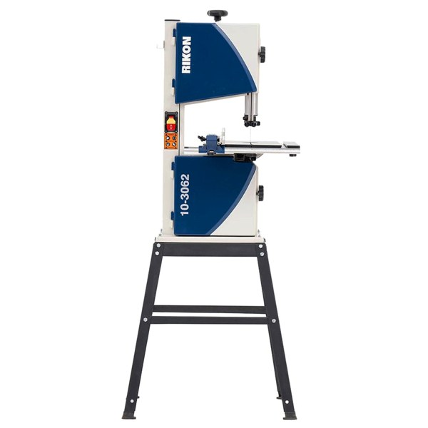

FEATURED DEAL
Highland · $150 off
Rikon 10″ Deluxe Bandsaw with Stand (10-3062S)
Rikon built this 10″ saw like a shrunk-down 14″. It has tool-free spring-loaded blade guides, a quick-release tension lever and a full 5″ of resaw height, which is enough for book-matched drawer fronts. The 1/2 HP motor has two speeds: high for wood, low for brass and aluminum with a bi-metal blade. The cast-iron table tilts 0°–45°, and it comes with an aluminum rip fence and its own stand. It cuts curves, box parts and thin resawn stock without taking up a 14″ saw’s floor space. $150 off at Highland Woodworking.
SHOP PRICE: $499.99
WAS: $649.99